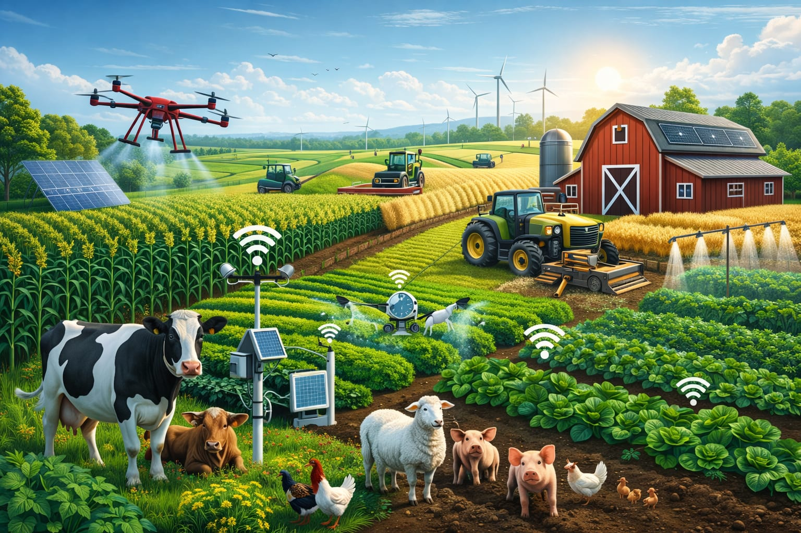
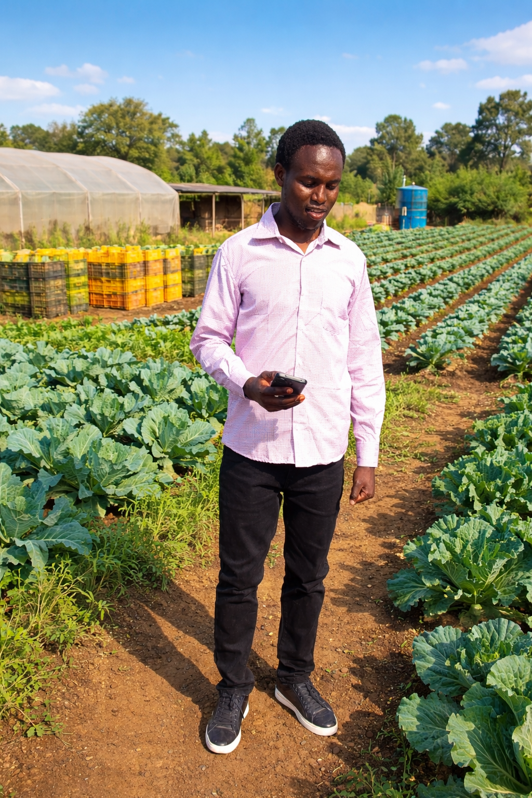

Revolutionizing agriculture with modern farming & technology.

Using technology for better farm productivity.
Environment friendly farming technology.
Healthy and natural farming practices.
Protecting nature while farming.

• Tala AgroTech is dedicated to improving agricultural practices through
innovative technology. Our mission is to empower farmers with smart
solutions for sustainable farming. Welcome to our Smart Farm -a place
where modern farming and hardwork come together.We are small but
passionate who believe that Agriculture should not just be farming but
modernised farming. This website was built from a simple idea: modern
technology should feel exciting ,friendly,and accessible to everyone,not
complicated or intimidating.
• Our journey began a curiosity to explore how modern methods can make
agriculture more beneficial. We wanted to create something that people
could interact with, learn from, and grow at the same time. What started
as a simple project has grown into a platform where imagination meets
functionality.Every feature you see here is designed with the intention
of makng your farming smooth,engaging, and sustainable.
• At the heart of our work is a strong belief in creativity and working
smart.We focus on building methods that are easy to use while still
bearing profitable returns.
Everything is carefully designed to give you value without overwhelming
you.
• Our Mission:implementing innovative agricultural practices and
technology to maximize yields sustainably, delivering
reliable,affordable food to market.
We aim to raise healthy animals using holistic grazing practices
,ensuring environmental stewardship and premium product quality.
• Our Vision:To be a leader in sustainable, technology-driven
agriculture that supports global food security.
We are looking ahead to build a robust rural economy where ecological
agriculture flourishes.
• Everything here is built with genuine effort and willingness to try new things.We believe that great ideas don't have to be perfect-they just have to start somewhere.
• Thank you for being part of this journey.Whether you're here to
explore,learn or implement,we're glad you stopped by.
Take your time ,click around, and make yourself at home.
Tala AgroTech provides innovative solutions for managing livestock, ensuring their health and productivity while promoting sustainable practices.
Learn more about our livestock solutions
• The breed originated from Holland and was imported to Kenya in 1908.
Several bloodlines have been imported from Europe, America and Israel.
The Kenya Holstein-Friesian, through adaptation overtime and crossing
with local lines, produces a fair amount of milk. The Holstein-Friesian
is the largest and most populous dairy cattle breed in Kenya
predominantly found in the highlands. The breed has been crossed with
the Sahiwal and Improved Kenyan Boran to produce excellent dual-purpose
crosses that are suitable for the lowlands and semi-arid areas.
• The breed is continuously being improved using local and imported
semen and is promoted by the Hostein-Friesian Breeders’ Society of Kenya
(HFBSK) which is the custodian of the breed standards. The breed is
raised under various production systems ranging from high input
zero-grazing to semi-zero systems.
• The breed was introduced to Kenya in 1908 from South Africa. It has
been developed over the last century through introduction of bloodlines
from Europe and America. The Ayrshire cattle Breed society is the
custodian of the breed standards and promotes the breed.
• Ayrshire is the second largest and populous of the dairy cattle breeds
in Kenya and widely distributed in medium to high rainfall regions. The
breed is raised under various production systems ranging from high input
zero-grazing to semi-zero and free-range systems. The breed is fairly
hardy with high feed conversion efficiency, and adaptable to varied
agro-ecological zones, relatively tolerant to most tropical diseases and
adapted to solar radiation while exhibiting minimal congenital diseases.
• The Guernsey originated on the small Isle of Guernsey, situated in the
English Channel just off the coast of France. It was introduced to Kenya
in 1930’s and has been developed for milk production. The breed is
mainly found in central highlands and parts of Rift Valley with a fair
population domiciled at ADC and Mukumu farms. Guernsey population in
Kenya has been reducing over years because of low utilization. The
Guernsey breed society is the custodian of the breed standards and
promotes uptake of the breed. The breed’s attributes include moderate
daily feed requirements, good feed conversion efficiency, early
reproductive maturity, good calving ease and temperament.
• The breed is known to perform well under various production systems
ranging from high input zero-grazing to semi zero-grazing system. It is
more tolerant to heat stress and diseases than other dairy breeds in the
country
• The breed originated from the Jersey Island of the coast of France. It
was introduced to Kenya in 1920 by the white settlers. Jersey breed is
the third largest among the four exotic dairy cattle populations in
Kenya. The herds are found mostly in Nairobi area, coastal region,
Kiambu and Nakuru counties. The Jersey Breed Society of the Kenya is the
custodian of the breed standards and its promotion. The breed is ideal
for small-holder dairy producers where land parcels are small.
• The breed is known to perform well under various production systems
ranging from high input zero grazing to semi-zero system. A Jersey cow
in milk is able to sustain itself without losing body condition
throughout the lactation period. The Jersey is hardy and adapted to
varied Agro-Ecological Zones. It has hard black feet that are less prone
to lameness. They are well-known for their high feed conversion
efficiency and produce high quality milk rich in fat, protein, minerals
and trace elements and has relatively low feed requirements. The breed
is suitable for cross breeding/ improving local breeds due to its small
size.
• Maasai Zebu is predominantly found in southern Kenya extending to north-east Tanzania with close association with the Maasai community. Comparatively, it is the largest of all SEAZ types in Kenya. It is mainly kept for milk and only slaughtered during special social ceremonies.
• Kamasia zebu is predominantly found in central Kenya plains within Samburu County. It has long been kept by the Samburu community. Few populations are also found in Laikipia and Baringo counties. It has a cervical-thoracic hump. Tolerant to tick-borne diseases, drought and can walk long distances in search of water and pasture. Mainly kept for milk and meat.
• Winam Zebu is mainly found in western Kenya in the lowlands of the Lake Victoria basin, kept by the Luo and Luhya communities. It is comparatively, the smallest of all SEAZ with varied horn shapes, sizes and orientation. There is a notable variance in hump size and position. It is tolerant to tick-borne diseases and helminthes. Kept for draft (tillage), milk and sporting.
• Nandi zebu is predominantly found in north rift region, with the Nandi community. The breed is endangered due breed replacement, upgrading andort), milk and meat.
• The Watende zebu are found to the south of Lake Victoria basin in Migori (Kuria) county. It is named after the Watende (Kuria) community. It is tolerant to many diseases and kept for draft, milk and meat. Mature body frames are thin, shallow but long with relatively long horns.
• Mainly found to the south-west and east of Kenya. Its is comprised of four distinguishable types: the Taita Taveta, Giriama (Tuni), Duruma and Kamba zebu-types. The Kamba zebu is kept by Kambas in Eastern Kenya. It has large irregular humps pyramid- shaped, some have cervico-thoracic humps. Tait Taveta, Duruma and Giriama (Tuni) zebu-types are kept in the coastal counties of Kenya (Taita Taveta, Kwale and Kilifi). They have varoius horn shapes and hump sizes but some are polled. They all have pendulous dewlap. They are mainly kept for draft (tillage and transp!--livestock section -->
• The Teso zebu is found in western Kenya, Busia county. They come in various coat colours with black, black/white being common. They are relatively big in body size with deep chest and pendulous ears. The dewlap is present in varying sizes. It is mainly used for draft (tillage), milk and meat. Tolerant to tick-borne diseases and adapted to a range of environmental conditions and terrains.
• Found in North-western region of Kenya with the Turkana tribe. Comes
with varying coat shades brown/ red to darkish brown. It is the most
adapted of all zebu-types in east Africa. The animals are able to walk
through rugged terrains under high temperatures in search of water and
pastures. Karapokot are closely related to Turkana zebu only that they
are kept by the Pokot (West Pokot and Baringo) and Karamoja community in
Uganda.
• Mature males have large dome-shaped humps. They have large dewlap,
umbilical fold and pendulous sheath. They are kept for milk and meat
An automated irrigation system that optimizes water usage based on soil moisture levels and weather forecasts.
A drone equipped with sensors to monitor crop health and provide real-time data to farmers.
A robot designed to assist with harvesting crops efficiently and reduce labor costs.
If you have any questions or would like to collaborate, please reach out
to us at ;